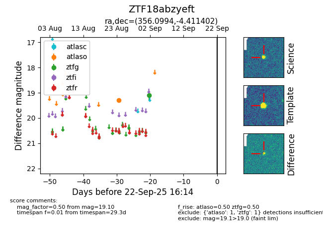

FINK: ZTF18abzyeft
Lasair: ZTF18abzyeft
ALeRCE: ZTF18abzyeft
ZTF18abzyeft (ztf,fink)
equatorial (ra, dec) = (356.0994,-4.41140)
galactic (l, b) = (84.8463,-62.21837)

last atlaso=19.29, ztfg=19.10
1 atlaso, 1 ztfg detections